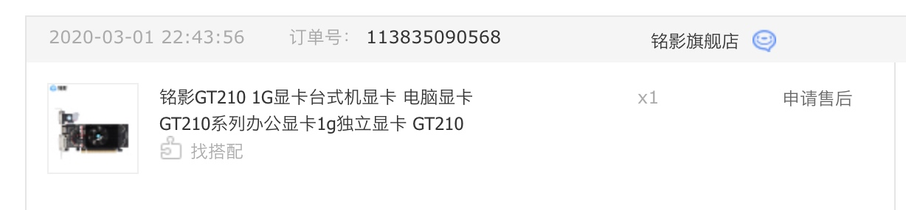
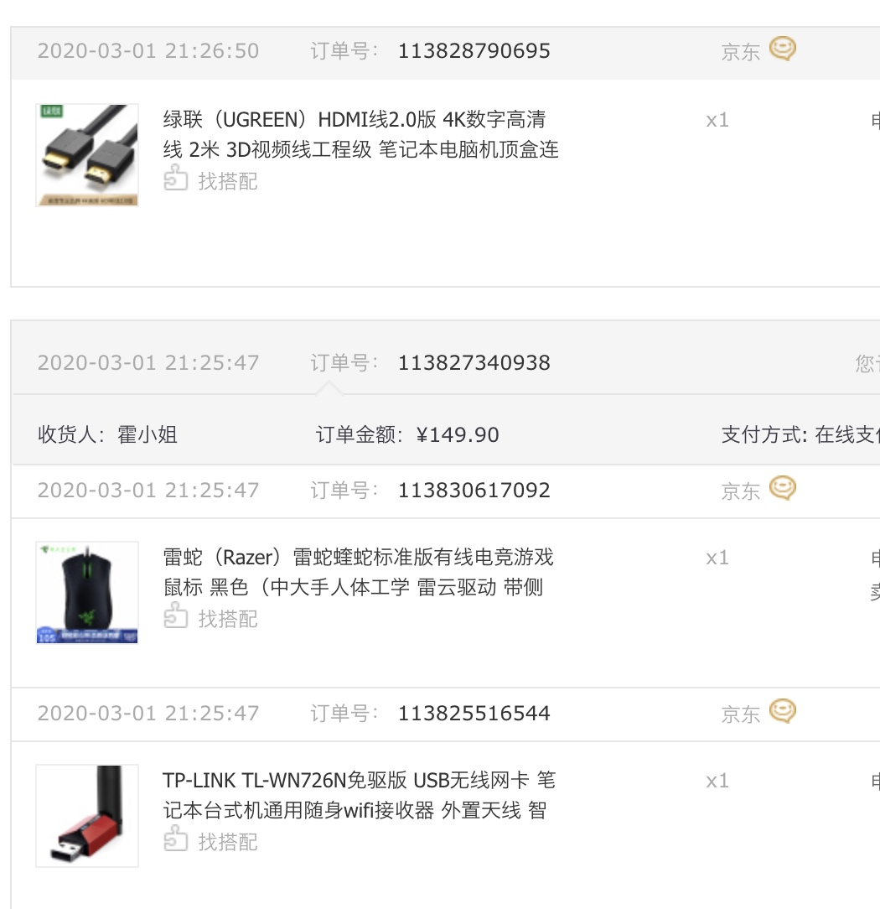
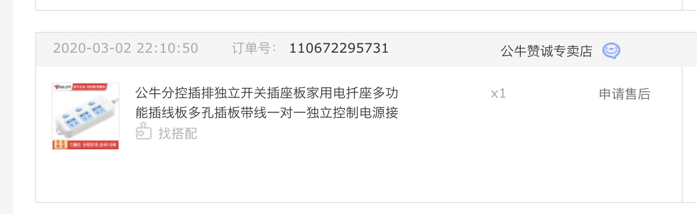
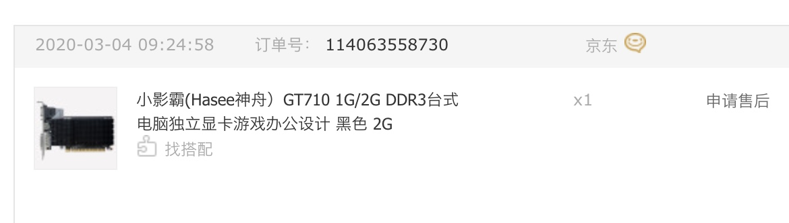
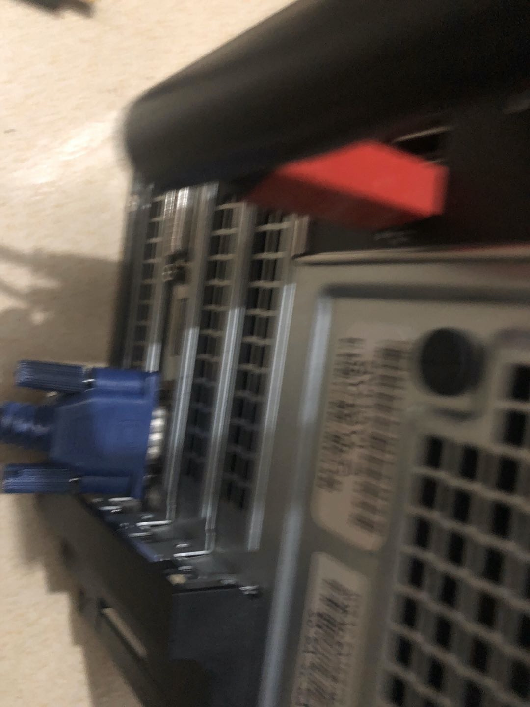
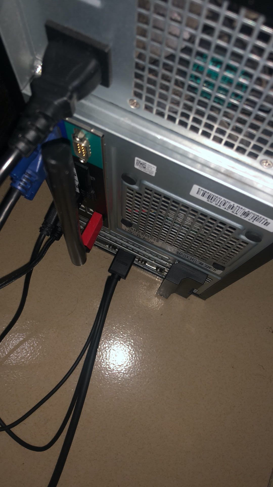
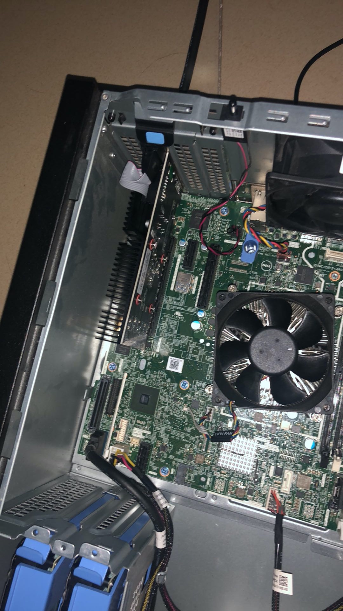
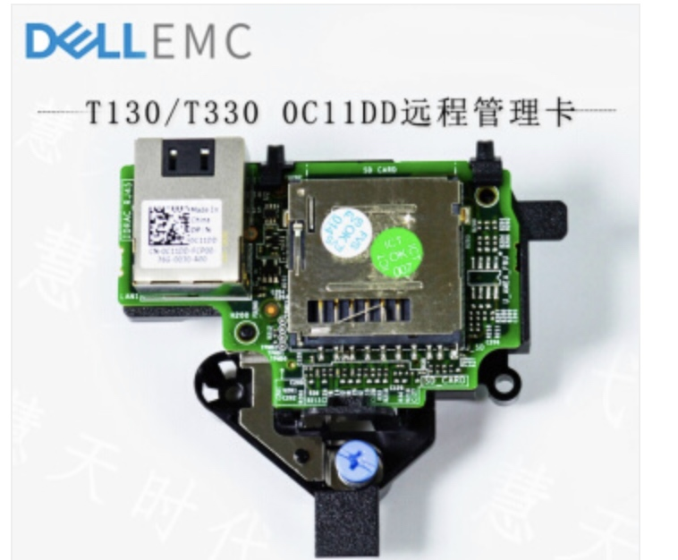
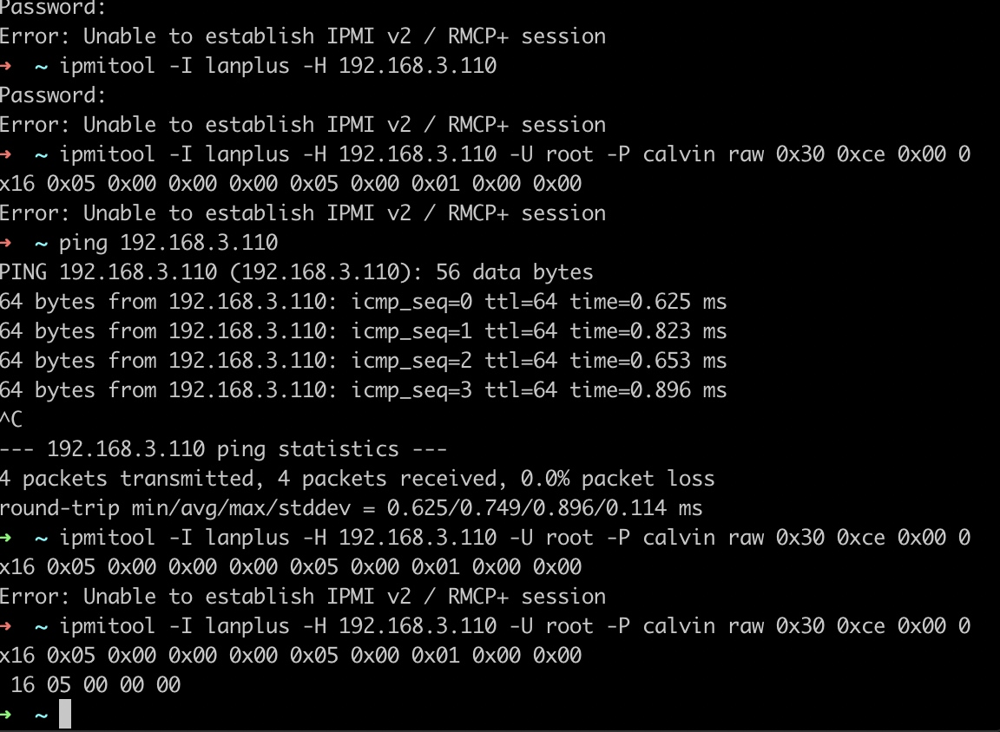

最近朋友送我一台戴尔t130主机，这台服务器版配置还是挺高的，cpu E6,8G内存。 128 ssd + 4T raid 1。
但服务版，分辨率实在是低。故需增加独显。
踩坑
服务器相比普通主机，缺少以下：
- 独显
- 无线wifi
- 声卡
原本以为装上显卡，就可以顺畅玩玩。起码分辨率高点，看得也舒服点。
附上第一次显卡截图

其它配件：


因为办公用原因，不用太高端的显卡（主要因为穷）。接上显卡之后，显示器黑屏。问客服原因，该显卡不支持品牌机，ok，申请退货。
故我再选择第二款好点的显卡

经过网上查资料，该主机开机只能使用vga显示，进入界面成功.
在设备管理器禁用集显的启动，顺利切换到hdmi高清分辨率。



尝试过bios禁用集显启动，换来的是一直卡在自检界面。进入不了，再切回来。
坑2
虽然独显使用成功了，但主机内的风扇超级大声。这是因为这主板pci-e插糟有东西就一定会触发。
解决
还好，戴尔有idrac远程管理功能。在bios上开启一下，并启用pci1的vlan功能，设置上ip。使用网线直接链接该pci1网线口。设置同一网端即可。
没必要买idrac扩展哈。

idrac默认设置
账号：root
密码：calvin
IP：192.168.0.120
ipmitool -I lanplus -H IDRAC网口 iP -U 用户名 -P 密码 raw 0x30 0xce 0x00 0x16 0x05 0x00 0x00 0x00 0x05 0x00 0x01 0x00 0x00
ipmitool功能，即可减少风扇转速。
ipmitool在mac下直接
brew install ipmitool

参考链接